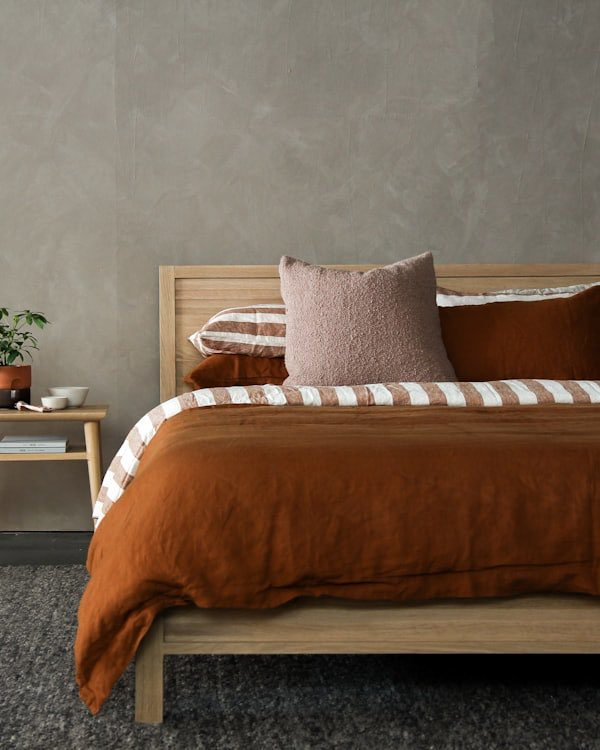
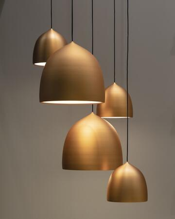
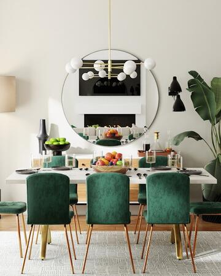
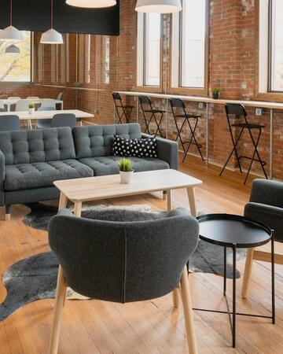
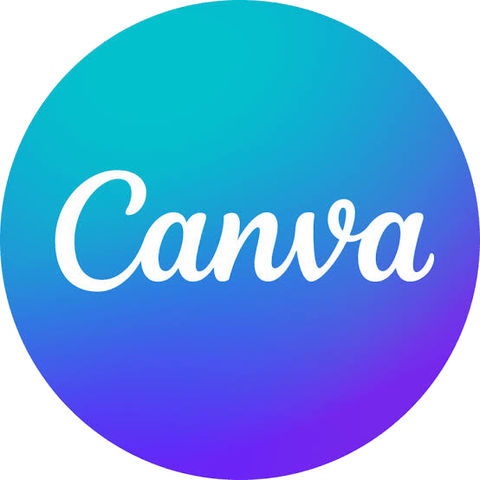
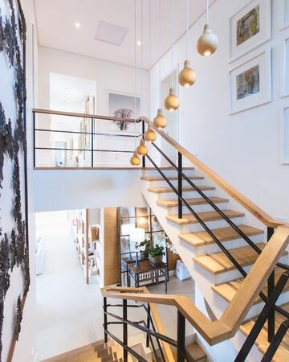
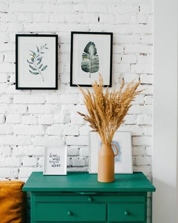

dezeen.com
Rust Linen Bedroom
Limewash plaster · Rust linen · Slatted oak
japandi · bouclé cushion · wool shag · calm, earthy
For interior designers and studios
Save from Chrome or your iPhone. Loupe tags every image the way a designer would, so you can find it again in your own words.
Free to use — not a trial. Chrome, iPhone and web.
Try it
Loupe reads every save the way you would: color names, materials, era and mood. Tap a description and watch your library answer.
3 found for “sage walls, warm wood”
Your library
Open Loupe and you see what you saved. Nothing recommended in front of it, nothing generated, nothing to scroll past.

dezeen.com
Rust Linen Bedroom
Limewash plaster · Rust linen · Slatted oak
japandi · bouclé cushion · wool shag · calm, earthy
Save from anywhere
Hover any image on any site and hit Save. Crop to the detail or circle what matters.
Add to ChromeOn Instagram, Pinterest or Safari, tap Share, then Loupe. Done before the story ends.
Showroom photos, site visits and market-trip snaps from your camera roll, tagged as they land.
For studios
Give every project a shared board. Everyone saves into it from their own phone or browser, every save is credited, and it all belongs to the studio, not to someone's camera roll.
Hartley kitchen
6 items · shared with 4



The whole team saves to the same place, and anyone can search it in designer language.
See who found each image and where it came from.
Download a whole board as a zip for the presentation or the contractor.
Works where you design
Open the Loupe sidebar in Chrome next to Canva, Figma or any canvas in your browser and drag images in. Inside Canva, Loupe lives in the side panel.

Canva appLiveHartley kitchenConcept A — warm minimal


Pricing
Save, tag and find your references with no clock running. Upgrade when you want more, or when you bring your studio in.
Personal
Free
Your own library, from Chrome, iPhone and web.
Studio
For teams
Shared project boards that belong to the studio.
Yes. Loupe is free to use, not a trial that runs out. Paid plans add more for heavy users and for studios.
No. Your library holds only what you and your team saved. Loupe describes those images so you can find them; it never generates or recommends new ones.
Any website through the Chrome extension, any app on your iPhone through the share sheet, and your camera roll through the Loupe app.
Yes. You can see every tag, remove the ones you don't want and add your own.
Yes. Download any board as a zip, or drag images into Canva, Figma or any canvas in your browser.